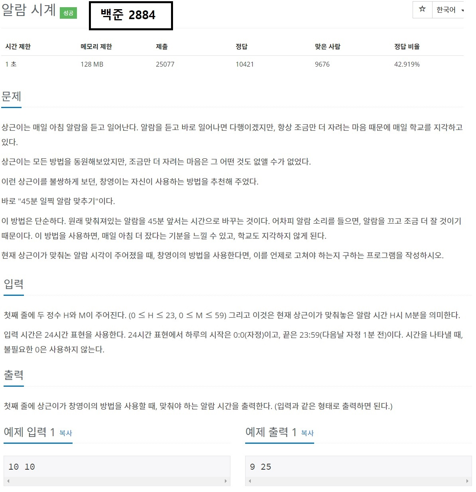
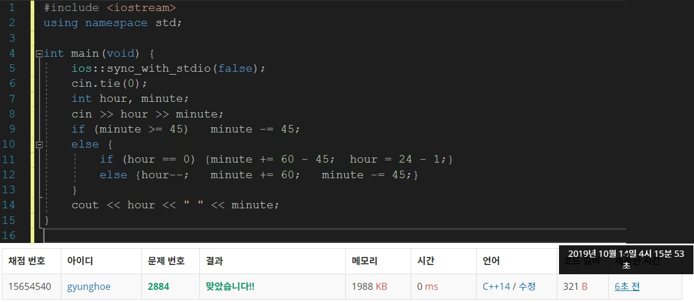

목차
- 구현이란?
- 구현 문제를 출제하는 이유
- 구현하여 풀 수 있는 문제
- 코드 구현과 주의사항
글을 시작하기에 앞서
-이 글은 [2019-10-13]에 작성된 글입니다. 실제 최신 정보와는 다를 수 있습니다.
-본 게시물은 웹 프로그래밍 실습의 중간 대체과제로 제작된 것으로, 본 블로그 만을 통해 삼성 SW 역량테스트를 준비하는 것을 권하지 않습니다.
1. 구현이란?

구현은 어찌보면 가장 간단한 문제 유형입니다. 문제가 시키는대로, 문제에 제시되어있는 논리적 흐름대로 코드를 짜면 되기 때문입니다. 다소 까다로운 흐름의 문제들이 종종 출제되지만 침착하게 하나씩 이해하고, 이해한 바를 코드로 옮긴다면 충분히 풀 수 있는 유형입니다.
2. 구현 문제를 출제하는 이유

구현하는 문제는 실생활에 가장 많이 적용할 수 있는 분야이고, 따라서 코딩 테스트에서도 변별력있게 내기 좋은 분야입니다. 구현하는 문제를 통해 응시자들이 다음과 같은 능력을 갖추었는지 확인할 수 있습니다.
- 문제를 정확하게 이해하는 능력
- 이해한 바를 바탕으로 공간적,추상적 사고를 할 수 있는 능력
- 수학적 사고 능력
- 생각을 코드로 나타낼 수 있는 능력
다시 말해, 문제를 수학적으로 이해하고 공간,추상적인 개념을 결합하여 코드로 나타낼 수 있는지 묻는 것입니다. 흔히 배우는 수학 공식이 나오는 것은 물론, "스도쿠", "오목"과 같은 게임을 무조건 이기는 방법을 구현하는 문제가 나오기도 합니다. 코딩 대회에서도 고난도 유형으로 자주 출제되지만, 삼성 역량테스트 A형에서 고난도의 구현문제가 출제되지는 않습니다.
3. 구현하여 풀 수 있는 문제
상근이는 알람을 45분 일찍 맞추려고 한다는 조건과 1시간이 60분, 1일은 24시간이라는 점을 고려하여 문제를 풀어야 합니다.
4. 코드 구현과 주의사항
구현 문제를 풀 때에 주의해야 할 점은 세 가지입니다
- 구현으로 풀 수 있는 문제인가
- 문제를 제대로 이해하였는가
- 구현한 알고리즘이 제한시간 내에 동작하는가
가장 우선적으로 고려해야 할 점은 정말 이 문제가 어떤 구현으로 풀 수 있는 문제인지 확인하는 것입니다. 예를 들어, 주어진 점들을 이어서 가장 교차점이 많은 볼록 다각형을 구하라는 문제는 단순 구현 만으로 풀 수 있는 문제는 아닙니다.
구현 문제의 가장 중요한 핵심은 문제를 정확하게 이해하는 것입니다. 여러 가지 규칙이 적용된 경우에도 헷갈리지 않고 결과값을 추론해낼 수 있어야 합니다.
마지막으로, 문제에서 요구한 방법대로 구현하였을 때 제한시간 내에 동작하는지 확인해야 합니다. 일부 문제의 경우 중복되는 과정들을 제거하지 않으면 시간초과가 나기 때문에 코드를 구현하기 전 구현할 코드의 흐름을 다듬을 필요가 있습니다. 예를 들어 1에서 10만의 범위를 가지는 수 10개가 소수인지 아닌지 알아내라는 문제가 있을 때는 입력이 있을 때마다 일일히 소인수분해를 하는 방법으로 문제를 풀 수 없습니다. 먼저 에라토스테네스의 체를 사용하여 수를 거른 뒤에 입력값들이 소수인지 여부를 판단해야 합니다.
블로그의 내용이 도움이 되었나요? 저에게 주신 의견을 바탕으로 더 나은 컨텐츠를 만들어갈게요:)